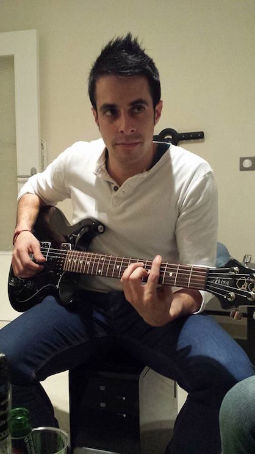

Membership
- PC member for WWW2016 25th International World Wide Web Conference (Poster/Demo Track)
- PC Member for ISWC2015. 14th International Semantic Web Conference - (Poster/Demo Track)
- PC Member for SIMBig2015. 2nd International Symposium on Information Management and Big Data
- PC Member for ESWC2015. 12th European Semantic Web Conference - (Poster/Demo Track)
- PC Member for ISWC2014. 13th International Semantic Web Conference - (Poster/Demo Track)
- PC Member for ESWC2014. 11th Extended Semantic Web Conference - (Poster/Demo Track)
- PC Member for SIMBig2014. 1nd International Symposium on Information Management and Big Data
- Subreviewer for HT2014 25th ACM Conference on Hypertext and Social Media
Previous
-
From 15/01/2011 to 28/02/2012, University of Extremadura (UEX), funded by Junta de Extremadura.
Development of an ontology-based management system for digital television. Study of knowledge engineering techniques for retrieving information about television content from various existing sources.
-
From 01/01/2009 to 14/01/2011, University of Extremadura (UEX).
evelopment of a Java application (WeAPoN) for designing Administrative Processes that are represented according to an domain ontology model. This semantic representation makes possible better knowledge inferences over the data, automatically propagate changes in the workflow, and generate Web form applications materializing that particular workflow.
-
From 15/12/2007 to 15/12/2008, University of Extremadura (UEX).
Study of valid scenarios for developing interactive Multimedia Home Platform applications by using low-cost components, leading to the implementation of a digital interactive application for e-learning services over DVB-T signal.
Others
I love music challenges against my bro,
Suso...
